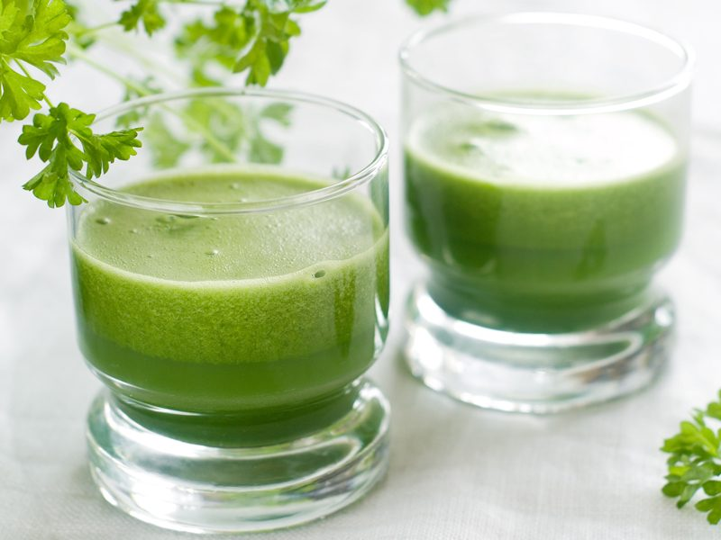
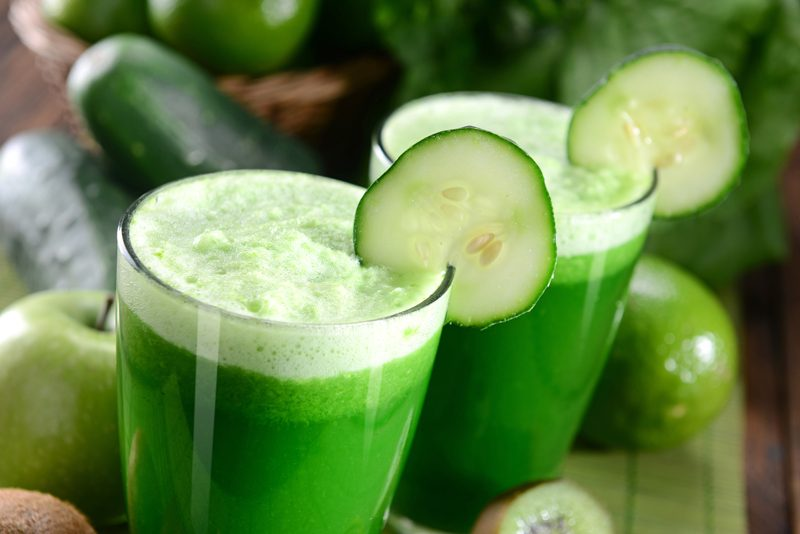

Juicing Greens (recipe ideas)
Increase your knowledge about green juicing!
The juice of organic vegetables will not only speed up the process of detoxification, but it will also flood your body with enzymes, vitamins, and minerals for quick absorption and will significantly benefit the immune system.
The juice of organic vegetables is rich in nutrients. As the cells of your body are bathed in these fresh, alkaline vegetable juices, they begin to release acids, which are toxins that can then be removed through the elimination channels of the body, i.e., the lungs, kidneys, skin, etc.

Juicing provides a rich source of live enzymes essential to the digestive process. Enzymes are proteins that break down foods into nutrients your body can readily digest. When you eat, digestive enzymes are released from your saliva glands sending signals to the stomach and small intestine in preparation for digestion. If you are new to juicing, start slow and gradually introduce vegetable juice to your body.
Cautions… Concentrated Nutrients
Fresh vegetable juice is more concentrated than the vegetables you eat. Also, the nutrition and benefits of the vegetables are released and made available to the body much faster than if your body were digesting a whole vegetable.
If you are new to juicing, you will want to begin with more basic vegetables such as carrots, celery, parsnips, cucumber, etc. Then with time, gradually introduce vegetables such as dandelion leaves, parsley, beet greens, etc. Purslane and wheat grass are more powerful juices and should be added after juicing for a while.
You need to be more careful when using green juices such as broccoli, lettuce, cabbage, dandelion, spinach, collard greens, mustard greens, kale, and all other greens.
These juices tend to be more powerful and so you will want to start slow and gradually increase. Ultimately, you never want more than a quarter of your juice to be green juice.
Eat Your Veggies Too
Fresh vegetable juice is great, but you are still going to need to eat your veggies too!
Your body is a natural juicer. As an example, when you eat a carrot, your body begins to digest it. Essentially, your body extracts the juice from the carrot and then gathers the nutrition from the juice for its bodily functions. Then, the fiber passes through the colon and helps keep you regular.
The benefit of juicing is that you help your body by removing the step required to extract the juice from the vegetable. But in doing so, you also lose the all-important fiber. So continue eating your veggies to get the fiber you need to help maintain regularity.

Juice Responsibly
We’ve all heard that saying, “Drink Responsibly.” Well, today I am going to advise you to juice responsibly. As I mentioned above, green juices, in particular, are very potent! How much you can drink will depend on where you are coming from in your health journey.
Ultimately, it is important that we are consciously aware of the power that the vegetables and fruits can and do have on our body. Certain vegetables can have profound effects. For example, celery and parsley juice is a natural diuretic. Dandelion leaves stimulate the liver. Beets can move your bowels. By introducing too much of these powerful juices at once, your body can experience negative symptoms.
Juicing Foundation
- Drink juice on an empty stomach so your body can fully absorb all the nutrients flooding it.
- Drink the juice right away. Enzymes begin to degrade, therefore decreasing the nutritional content.
- Be aware of how many sweet fruits you are adding to your juices. Too much can lead to adverse effects and cravings.
- If possible, keep your juices as green as possible. The fewer fruits, the better.
- Chew your juice. Saliva in the mouth contains important digestive enzymes.
- Rotate the greens you use (kale, chard, spinach, mustard greens, collards, dandelion, arugula, etc.) in your juice each day to prevent a build-up of oxalic acid. By doing so, you will provide a more balanced amount of different vitamins and minerals for your body.
- Adding fresh lemon to your green juice will decrease the bitterness of the greens.
Simple Recipes
- Cleansing Carrot – 6-7 carrots / 1 handful parsley
- Lime Love – 1 tomato / 1 stalk celery / 1/2 cucumber / 1 thin slice of lime
- Pineapple Punch – 2 stalks celery / 2-inch thick slice of pineapple
- Primal Beet – 4 apples / 1/2 beet with greens
- Sweet Mixer – 5-6 carrots / 1 apple / 1 handful of parsley
- Veggie Love – 4 carrots / 2 kale leaves / 1/2 cucumber / 1/4 green pepper
- Wake Up – 2 tomatoes / 1 stalk of celery
- Zinger Love – 1 bunch kale / 2 cucumbers / 1/2 bunch of herbs like parsley, cilantro, or mint / 1 lemon with peel removed / 1 lime with peel removed / 1 green apple

Alfalfa Sprouts
Traditionally Used For:
- Anemia / Eyes / Fatigue / Hair Loss / Impotence / Liver / Kidneys / Thyroid / Weight Loss
A Good Source Of:
- Calcium / Choline / Magnesium / Phosphorus / Potassium / Silicon
- Sodium / Zinc / Vitamin A / B Complex / Vitamin C / Vitamin E
- Vitamin K / Chlorophyll / Amino Acids
Freshness Test:
- Alfalfa sprouts should have small green leaves. Once harvested, keep in the refrigerator.
________________________________________________________________________________________________________
Basil Juice
Traditionally Used For:
- Appetite Stimulant / Headaches / Stomach
A Good Source Of:
- Chlorophyll / Magnesium / Potassium / Vitamin A
Freshness Test:
- Basil can be bought from your local grocery store or you can also grow it yourself.
- Look for fresh bright green leaves, avoid those that have turned yellow.
________________________________________________________________________________________________________
Celery Juice
Traditionally Used For:
- Asthma / Constipation / Fluid Retention / Insomnia / Kidney Problems / Liver Problems
A Good Source Of:
Freshness Test:
- Choose celery stalks that are firm and as dark as possible.
- Avoid limp celery stalks.
________________________________________________________________________________________________________
Dandelion Leaves
Traditionally Used For:
- Anemia / Constipation / Eye Problems / Kidney / Liver / Skin Problems / Weight Loss
A Good Source Of:
- Calcium / Vitamin B–1 / Magnesium / Potassium / Chlorophyll
Freshness Test:
- Dandelions grow like weeds in your yard, literally.
- Look for small dandelion leaves, so they taste less bitter.
- They are best picked in the spring, but you can pick them all summer too.
- Avoid picking leaves in the areas where chemical fertilizers or pesticides have been used.
________________________________________________________________________________________________________
Kale
Traditionally Used For:
- Anemia / Asthma / Arthritis / Circulation / Eye Problems / Hair Loss / Hay Fever / Impotence / Liver / Skin Problems / Ulcers / Weight Loss
A Good Source Of:
- Calcium / Iron / Vitamin A / Chlorophyll
Freshness Test:
- Kale is best in the spring or fall. Look for firm kale leaves.
- Because kale is a green juice, you will find it beneficial to have no more than about ¼ of your juice consisting of green juice.
- Kale can have a powerful taste, although it’s definitely a vegetable worth juicing for its high chlorophyll content.
- You can grow kale quite easily yourself.
- Kale is very high in calcium and makes an excellent calcium alternative.
________________________________________________________________________________________________________
Mustard Greens
Traditionally Used For:
- Asthma / Bone Health / Menopause / Muscle Relaxant
A Good Source Of:
- Magnesium / Vitamin A, C, and E
Freshness Test:
- Look for leaves that are free of yellow or brown spots.
- Select crisp green colored leaves.
________________________________________________________________________________________________________
Parsley
Traditionally Used For:
- Anemia / Arthritis / Bladder Problems / Circulation / Endocrine System / Eye Problems / Kidneys / Liver / Prostate / Skin / Urinary Tract / Weight Loss
A Good Source Of:
- Calcium / Magnesium / Phosphorus / Potassium / Sodium / Sulfur / Vitamin A / Vitamin C / Chlorophyll
Freshness Test:
- Parsley is easily grown by yourself. It grows without any special care or attention. If you have a garden, simply throw some seed down and parsley will magically grow.
- Look for dark green leaves. The darker the leaves, the more chlorophyll there is.
Important:
- Because parsley is a green juice, you will find it beneficial to have no more than about ¼ of your juice consisting of green juice.
- Parsley is also a natural diuretic and should never be drunk by itself as it is simply too powerful.
- Parsley is very concentrated, and so I try not to use any more than 1 ounce in every 8-ounce glass.
- Parsley is high in oxalic acid and should be avoided by those who suffer from or are at risk for kidney stones, gout, rheumatoid arthritis, osteoporosis and those whose stomach is easily irritated.
- Since parsley is high in oxalic acid, you should also avoid combining parsley with other vegetables that are high in calcium, such as broccoli. Oxalic acid combines with calcium to create an indigestible compound. You should also avoid eating calcium-rich food immediately after eating or juicing parsley or any food high in oxalic acid.
________________________________________________________________________________________________________
Cilantro Juice
Traditionally Used For:
- Appetite Stimulant / Arthritis / Digestive System / Muscle Stiffness
A Good Source Of:
Freshness Test:
- Cilantro is easily grown by yourself.
- Look for dark green leaves. The darker the leaves, the more chlorophyll there is.
Important:
- Because cilantro is a green juice, you will find it beneficial to have no more than about ¼ of your juice consisting of green juice.
- Cilantro should never be drunk by itself as it can be powerful.
- Cilantro is very concentrated, and so I try not to use any more than 1 ounce in every 8-ounce glass.
- Information gathered from www.juicingbook.com.
There are SOOO many different greens and veggies that you can juice. The possibilities are truly endless.
Disclaimer
This website is not intended to provide medical advice. All content, including text, graphics, images, and information available on this site is for general informational, entertainment, and educational purposes only. The content is not intended to be a substitute for professional diagnosis or treatment. The author of this site is not responsible for any adverse effects that may occur from the application of the information on this site. You are encouraged to make your own healthcare decisions, based on your research and in partnership with a qualified healthcare professional.
© AmieSue.com